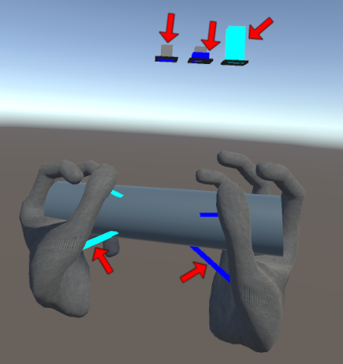

|
HaptX SDK
3.0.3
SDK for HaptX Gloves G1
|
Loading...
Searching...
No Matches
|
HaptX SDK
3.0.3
SDK for HaptX Gloves G1
|
An overview of the main features of the Unity plugin.
If you're just starting with the Unity plugin, see the Unity Integration Guide and/or the Unity Quick Start Guide. For low-level documentation, see Unity Plugin.
HaptxCore PrefabThe HaptxCore prefab (the prefab base for HxCore) is the interface for global parameters of the HaptX system. This prefab has many parameters that can be configured in the Inspector . A few noteworthy parameters are summarized below:
| Parameter Name | Description |
|---|---|
| Enable Tactile Feedback | Whether tactile feedback is enabled globally |
| Enable Force Feedback | Whether force feedback is enabled globally |
| Tactile Feedback Layers | Which layers trigger tactile feedback |
| Force Feedback Layers | Which layers trigger force feedback |
| Grasp Layers | Which layers receive grasp assistance |
| Grasp Threshold | Determines how difficult objects are to grasp |
| Grasp Visualizer | Settings for the Grasping Visualizer |
| Physics Authority Mode | Which physics networking scheme the plugin uses in a multi-user setting |
| Visualize Network State | Whether the Network State Visualizer is on by default. |
HxCore parameters.
HxCore adds physical constraints when it detects that a user is grasping an object to aid them with that interaction. When grasps are formed, updated, or released, HxCore generates events that can be used as triggers (Listing 1).
To aid in the process of debugging the grasping system, HxCore is equipped with a visualizer that shows information about which objects are being evaluated (Figure 1). For a legend of all the elements in the visualizer and what they mean see Table 2. If the default values of Grasp Visualizer → Toggle haven't been modified, this visualizer can be toggled per Unity Input Quick Reference.

| Element | Description |
|---|---|
| Cyan bars (at the top) | Grasp scores for grasps that have formed |
| Blue bars (at the top) | Grasp scores for grasps that have not formed |
| Gray bars | Thresholds under which grasps will not form |
| Cyan lines | Lines from parts of the hand involved in a grasp that has formed, to the object being grasped |
| Blue lines | Lines from parts of the hand involved in a grasp that has been detected but not formed, to the object not being grasped |
To aid in the process of debugging multi-user interactions, HxCore is equipped with a visualizer that shows how grasping constraints are functioning for the server and client (Figure 2).
The visualizer is comprised of shapes drawn around elements in the scene and a text readout describing the current state of constraints in the scene.
For a legend of all the elements in the visualizer and what they mean see Table 3. The visualizer elements are coded based on a combination of colors. For example in (Figure 2) below, the sphere around the hand is white because the hand is instantiated on the server (blue), locally controlled (green), and physically authoritative (red). The visualizer can be toggled using the input controls described in Unity Input Quick Reference, assuming the recommended inputs were copied into the project per the Unity Integration Guide.
| Element | Description |
|---|---|
| Blue wire sphere | Hands that are instantiated on the server. |
| Green wire sphere | Hands that are controlled by the local player. |
| Red wire sphere | Hands that currently have physics authority. |
| Red wire cube | Objects that are under authority. |
| Blue wire cube | Objects that is under authority but is being interacted with by multiple clients. |
| Green wire cube | Objects that are currently replicating movement to the client. |
| Yellow wire cube | Objects that have had movement replication to the client paused. |
HaptxPlayer PrefabThe HaptxPlayer prefab is primarily responsible for spawning HaptxHand Prefabs; however, it has secondary responsibilities. It utilizes HxOffsetTuner to allow the user to configure static world offsets that persist between runs, and in a multi-user context it synchronizes player HMD locations.
HaptxHand PrefabThe HaptxHand prefab effectively represents one HaptX Glove G1. Under the hood, it is a HxHand that has been combined with a set of HxPatches.
HxHand ScriptHxHand is responsible for motion capture, contact generation, and haptic characterization. It has many parameters that can be configured in the Inspector. The most noteworthy parameters are summarized below:
| Parameter Name | Description |
|---|---|
| Hand Scale | Scales the hand up or down post UserProfile application |
| Finger Body Parameters | Characterizes haptic response to contacts for fingers |
| Palm Body Parameters | Characterizes haptic response to contacts for the palm |
| Force-feedback Actuator Parameters | Characterizes ForceActuator response on this hand |
| Motion Capture Visualizer | Settings for the Motion Capture Visualizer |
| Force Feedback Visualizer | Settings for the Force Feedback Visualizer |
| Displacement Visualizer | Settings for the Displacement Visualizer |
| Contact Damping Visualizer | Settings for the Contact Damping Visualizer |
HxHand parameters.
HxHand supports two modes of operation: (1) using HaptX hardware; and (2) simulating HaptX hardware. Operating mode is automatically determined based on the simulation setting in the HaptX Dashboard.
When this class is operating in simulated mode its transform and gesture pose are tracked via VR controllers. By default, the user may cycle through a list of predefined gestures using the input controls described in Unity Input Quick Reference, assuming the recommended inputs were copied into the project per Unity Integration Guide.
HxHand is equipped with a visualizer that shows relevant motion tracking features, including raw sensor data. You can see how this visualizer looks in hardware mode in Figure 3 and simulated mode in Figure 4. If the default value of Motion Capture Visualizer → Toggle hasn't been modified, this visualizer can be toggled per Unity Input Quick Reference.
HxHand is equipped with a visualizer that shows information about force feedback (Figure 5). For a legend of all the elements in the visualizer and what they mean see Table 5. If the default value of Force Feedback Visualizer → Toggle hasn't been modified, this visualizer can be toggled per Unity Input Quick Reference.
| Element | Description |
|---|---|
| Cyan indicators | Indicators associated with engaged force-feedback actuators |
| Black indicators | Indicators associated with disengaged force-feedback actuators |
| Gray sheaths | Thresholds which must be exceeded by forces (projected onto the black indicators) for force-feedback actuators to engage |
| Blue bars | Forces being applied to different parts of the hand |
HxHand is equipped with a visualizer that shows the user when the displacement between their real and virtual hands has gotten too large (Figure 6). This visualizer can be toggled using the input controls described in Unity Input Quick Reference, assuming the recommended inputs were copied into the project per the Unity Integration Guide.

HxHand is equipped with a visualizer that shows the impact of our contact damping system (Figure 7). The box represents an object that is a candidate for contact damping, and the line is colored either blue or red based on whether contact damping is engaged. This visualizer can be toggled using the input controls described in Unity Input Quick Reference, assuming the recommended inputs were copied into the project per the Unity Integration Guide.
HxPatch ScriptHxPatch represents a patch of Tactor s, and is responsible for sampling the game world for surface geometry and characterizing tactile feedback. This class has many parameters that can be configured in the Inspector . The most noteworthy parameters are summarized below:
| Parameter Name | Description |
|---|---|
| Trace Distance | The length of each ray trace |
| Trace Offset | How far each trace backs up before tracing |
| Tactor Parameters | Characterizes Tactor response on this patch |
| Trace Visualizer | Settings for the Trace Visualizer |
| Tactile Feedback Visualizer | Settings for the Tactile Feedback Visualizer |
HxPatch parameters.
HxPatch is equipped with a visualizer that shows information about tactile feedback (Figure 8). For a legend of all the elements in the visualizer and what they mean see Table 7. If the default value of Tactile Feedback Visualizer → Toggle hasn't been modified, this visualizer can be toggled per Unity Input Quick Reference.
| Element | Description |
|---|---|
| Cyan indicators | Indicators associated with fully engaged tactors |
| Blue indicators | Indicators associated with partially engaged tactors. Positional offsets and color gradient indicate inflation heights |
| Black indicators | Indicators associated with disengaged tactors |
HxPatch is equipped with a visualizer that shows how it samples the world for surface geometry (Figure 9). For a legend of all the elements in the visualizer and what they mean see Table 8. If the default value of Trace Visualizer → Toggle hasn't been modified, this visualizer can be toggled per Unity Input Quick Reference.
| Element | Description |
|---|---|
| Black lines | Traces from the hand searching for objects |
| Cyan traces | Traces that hit an object |
| Black spheres | Object trace origins |
| Cyan spheres | Trace hit locations |
HxRigidbodyProperties ScriptHxRigidbodyProperties allows for the association of haptic properties on a per-physical-object basis and can be placed on any GameObject with a Rigidbody to define haptic properties specific to that physical object. This is useful when you want one physical object to have different haptic properties than other objects in the same layer.
Examples of the kinds of properties you can edit on a per-physical-object basis include:
Hover your cursor over a property in Unity to learn more about it.
HxPhysicalMaterial ScriptHxPhysicalMaterial allows for the association of haptic properties on a per-collider-group basis, emulating a section of a physical object with similar surface/material properties. They can be placed on any GameObject ; the script's setting will apply to Collider s attached to the GameObject, and to Colliders on child GameObjects if the Propagate To Children property is checked. (If checked and a child GameObject has its own HxPhysicalMaterial, that material will be used instead and propagation down that branch stops.) The script is used to define haptic properties specific to affected colliders.
Examples of the kinds of properties you can edit on a per-object basis include:
Hover your cursor over a property in Unity to learn more about it.
The phrase "Haptic Effects" encapsulates a number of classes that may be extended to define custom haptic-response patterns. The plugin includes several ready-to-use Haptic Effect implementations, which you can see in Table 9. If you need additional functionality you can easily create your own implementation—just duplicate the source of whichever existing class best fits your needs to use as a starting point.
| Class | Description |
|---|---|
HxWaveObjectEffect | Generates a parameterized, sinusoidal actuation pattern when in contact with attached objects |
HxWaveSpatialEffect | Generates a parameterized, sinusoidal actuation pattern in a spherical or cuboidal bounding volume |
HxWaveDirectEffect | Generates a parameterized, sinusoidal actuation pattern on Tactor s associated with arbitrary coverage regions |
HxCurveObjectEffect | Generates an actuation pattern defined by an AnimationCurve when in contact with attached objects |
HxCurveSpatialEffect | Generates an actuation pattern defined by an AnimationCurve in a spherical, cylindrical, or cuboidal bounding volume |
HxCurveDirectEffect | Generates an actuation pattern defined by an AnimationCurve on Tactor s associated with arbitrary coverage regions |
When working with default plugin settings, Haptic Effects that output forces of 150 – 275 N or displacements of 7.5 – 9.0 mm (based on which type of effect you're using) result in nominal tactor inflation. These values may change if you modify the ContactInterpreter::BodyParameters or ContactInterpreter::TactorParameters found on HxHands and HxPatches respectively.
ContactInterpreter::TactorParameters::dynamic_scaling value that is not equal to one. This is done to fit a wide range of physical interactions into the smaller range defined by hardware capabilities.HxCore.TactorCompressionFilterAttackRatio and HxCore.TactorCompressionFilterReleaseRatio.The plugin includes example prefabs demonstrating how to use a feature we call Haptic Primitives to create simple interactions like a button, dial, rocker switch, and bolt. Locate these prefabs by navigating to Assets → Haptx → HapticPrimitives . See Unity Haptic Primitive Summary for a more in-depth look at the Haptic Primitives feature.